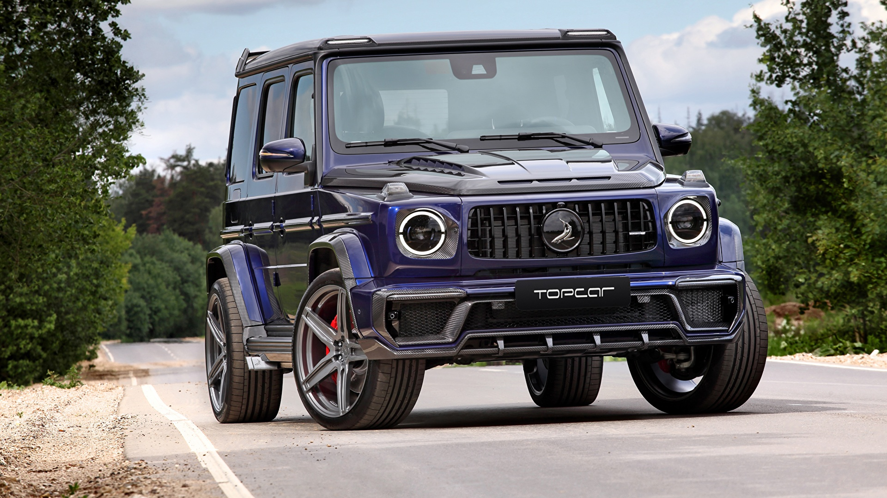
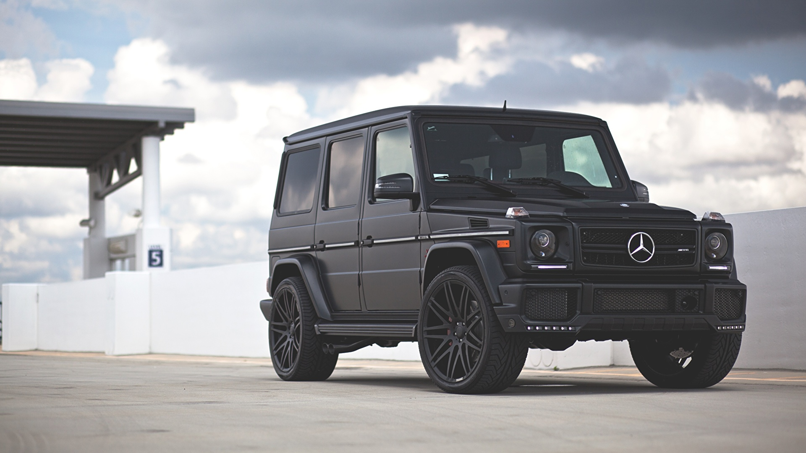
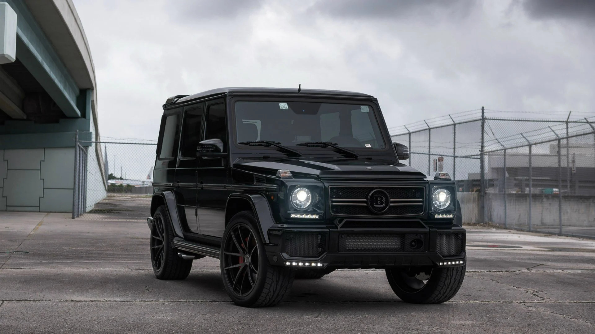
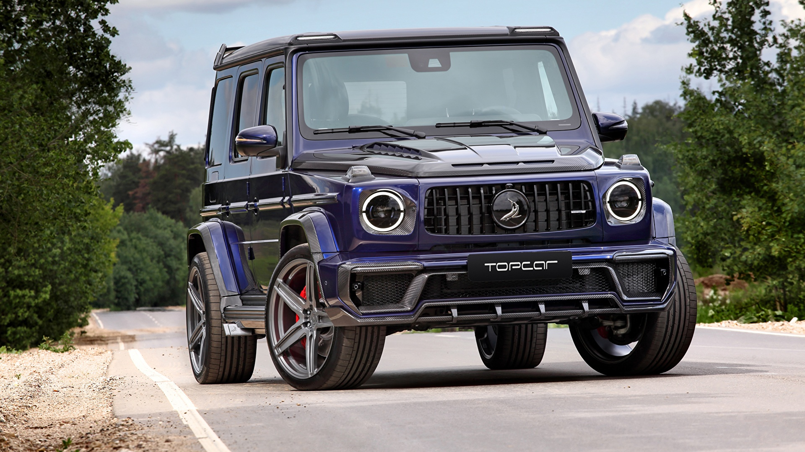
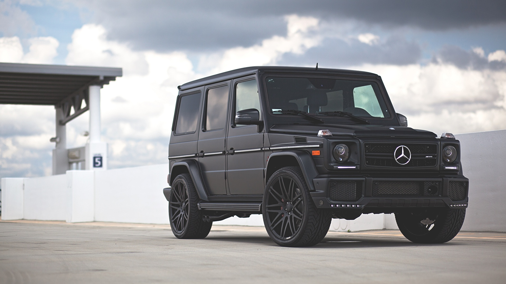
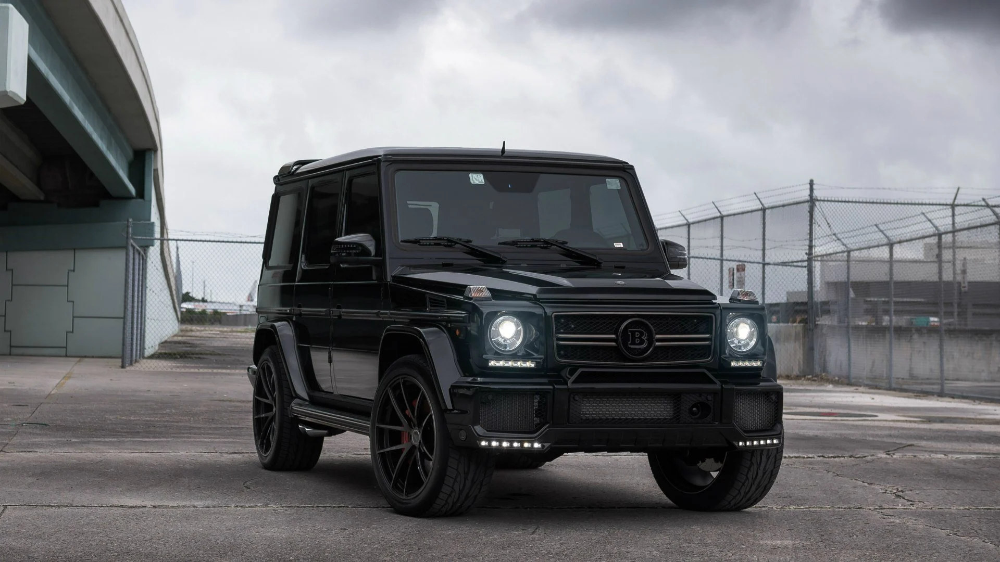
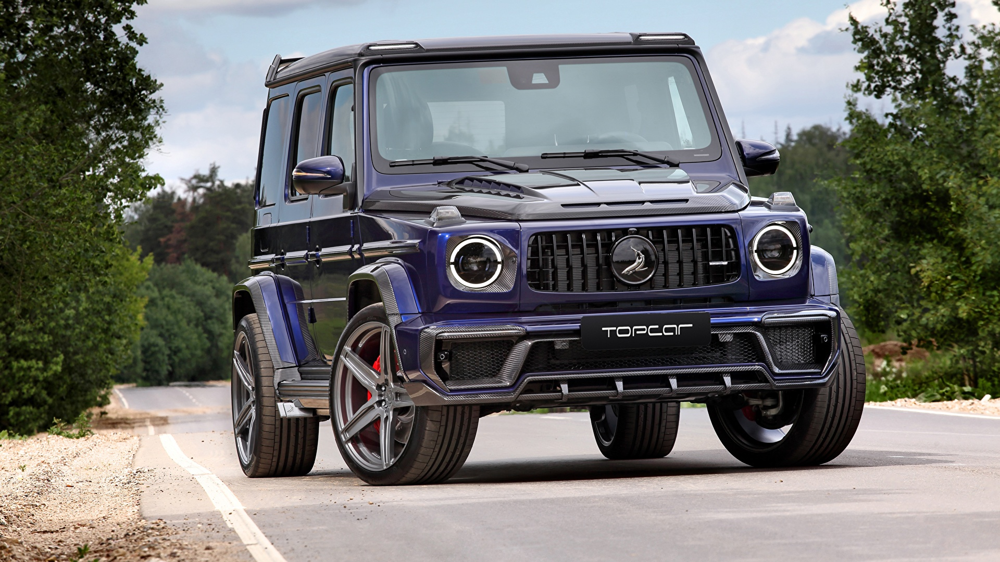
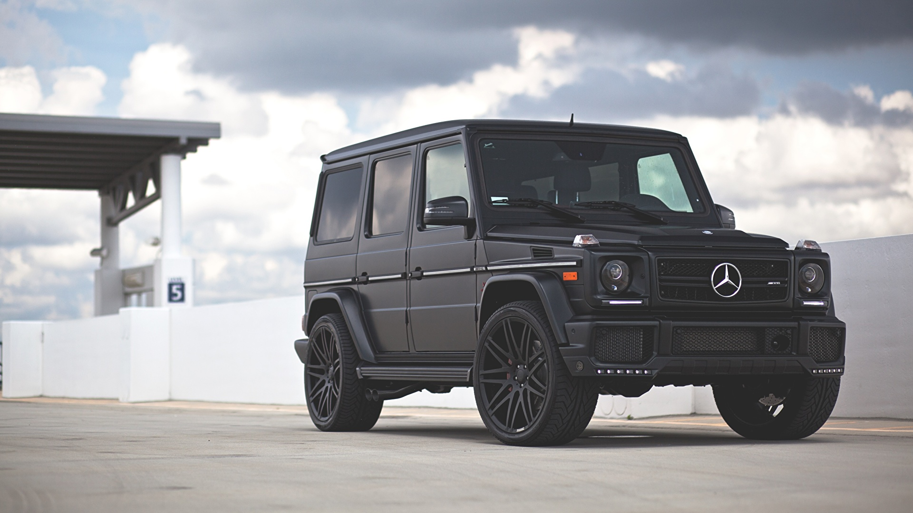
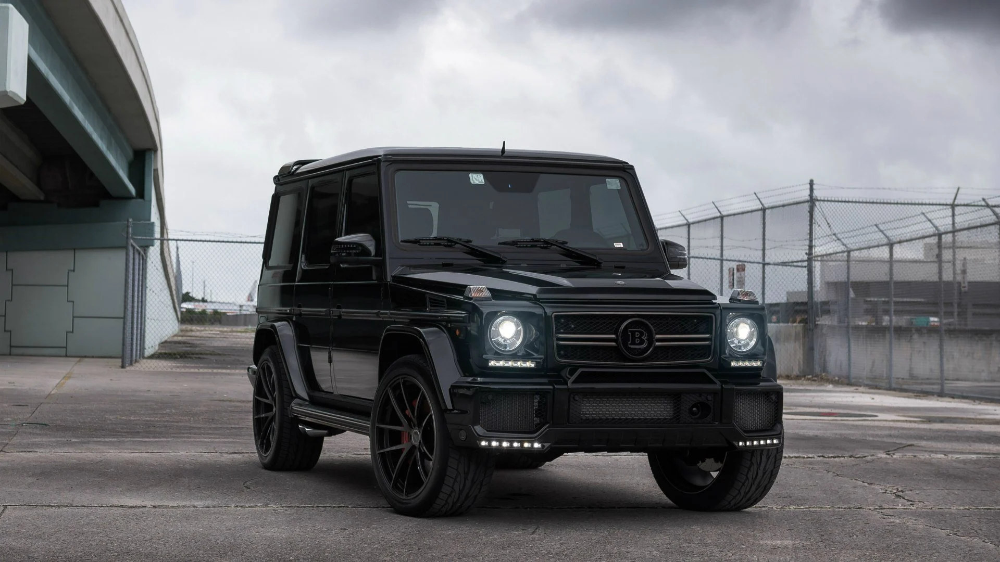
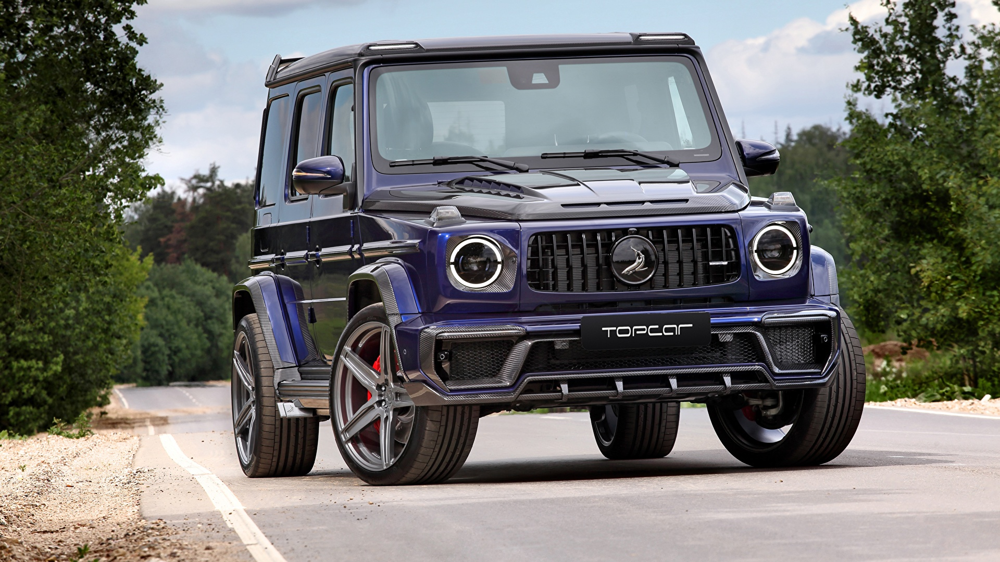
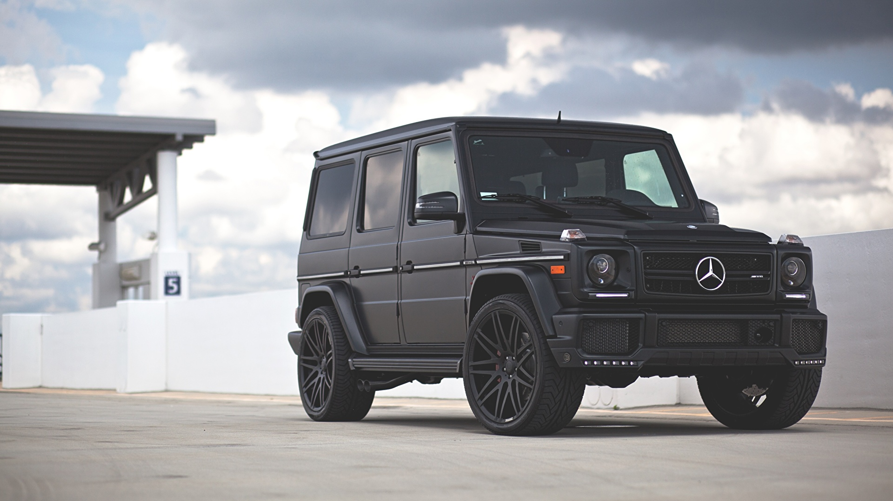
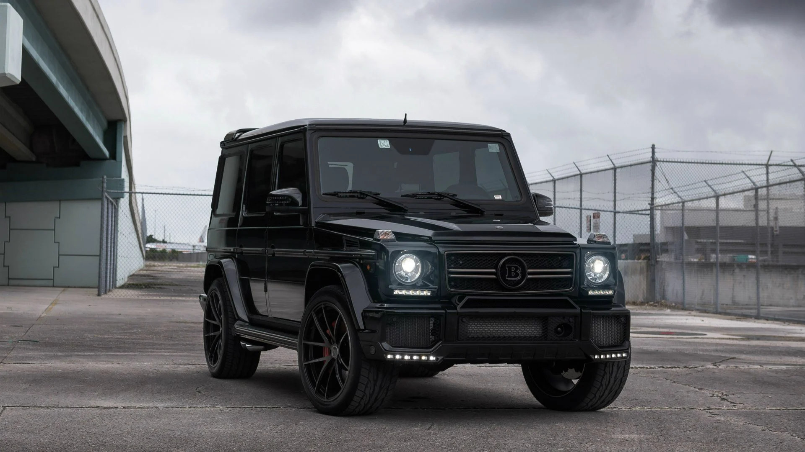
Pakiet Night sprawia, że Klasa G wygląda jeszcze bardziej wyraziście. W zależności od wybranego lakieru, nadwozie wyróżnia się akcentami w kolorze czerni obsydianu lub czerni nocy magno. Tworzy to kontrasty lub płynne przejścia. Opcjonalne listwy Black Accents w kolorze czerni obsydianu lub czerni nocy magno dopełniają indywidualnego wyglądu.
Elementy składowe:
Przyciemnione światła kierunkowskazu oraz tylne, jak również reflektory
Zewnętrzna listwa ochronna z dekoracyjnymi wstawkami w kolorze czarnym (C90), tylko w połączeniu z nadwoziem EXCLUSIVE Line (P23) oraz Linia AMG (P31)
Dolna osłona techniczna lakierowana na czarno (C49)
5-ramienne obręcze kół ze stopu metali lekkich 45,7 cm (18") z matowym wykończeniem w kolorze czarnym (RK7), w połączeniu z nadwoziem PROFESSIONAL Line (P03)
Obręcze kół ze stopu metali lekkich o średnicy 48,3 cm (19“) z 5 podwójnymi ramionami (RJ4), lakierowane w kolorze czarnym, w połączeniu z linią nadwozia EXCLUSIVE (P23)
50,8 cm (20") AMG wieloramienne obręcze kół ze stopów lekkich malowane na czarno z połyskiem (RJ5), w połączeniu z Linia AMG (P31)
Niżej wymienione elementy wyposażenia są w zależności od wyboru lakieru wykonane w kolorze czarnym obsydianowym (dla większości lakierów metalicznych) lub czarnym nocnym magno (dla wszystkich lakierów magno):
Osłona chłodnicy z lamelkami i oprawą gwiazdy Mercedesa
Obudowy lusterek zewnętrznych
Pierścień pod koło zapasowe tylko w połączeniu z linią nadwozia EXCLUSIVE (P23) i Linia AMG (P31)
Elementy wtykane w zderzaki, tylko w połączeniu z linią AMG (P31)
Odkryj najważniejsze elementy stylistyki nadwozia Klasy G w trzech różnych liniach wyposażenia – PROFESSIONAL Line Exterieur, EXCLUSIVE Line Exterieur i Linia AMG. Dowiedz się więcej na temat innych zalet, takich jak wytrzymały przód, wyeksponowane koło zapasowe na tylnych drzwiach lub wyraziste poszycie nadkoli.
Wnętrze pojazdu Klasy G już w standardzie oferuje bogate wyposażenie, takie jak kokpit Widescreen i oświetlenie ambientalne. Poza tym do wyboru są opcjonalne linie wyposażenia EXCLUSIVE Line Interieur lub SUPERIOR Line Interieur, w ramach krórych można skonfigurować fotele, tapicerkę i inne cehcy wyposażenia zgodnie z indywidualnymi upodobaniami.
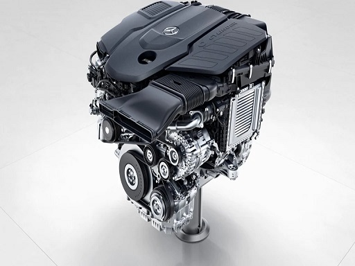 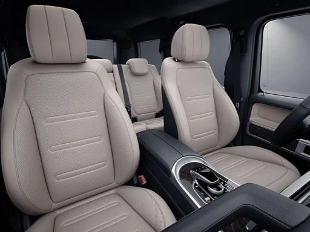 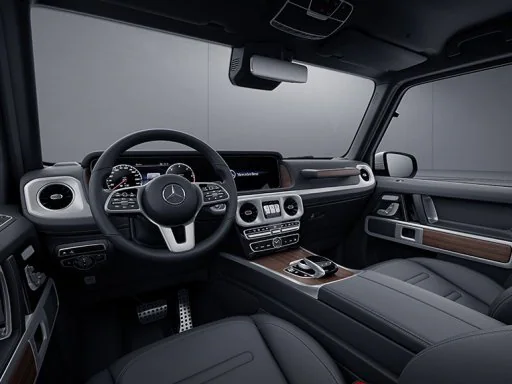
{kind=link}
{kind=link}
{kind=link}